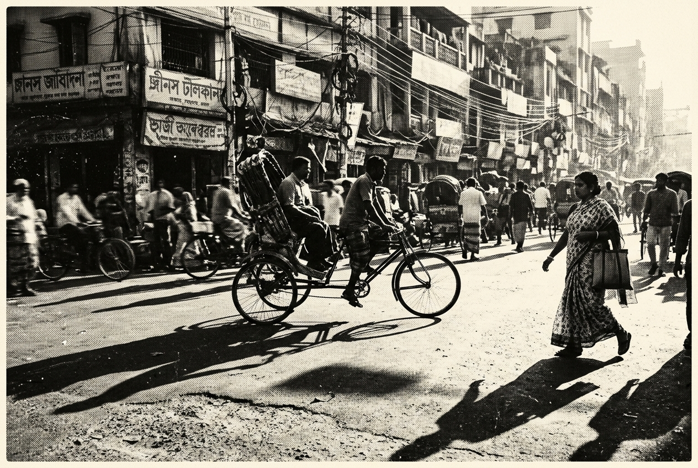

Vol. 01 / Issue 01 / One system, five surfaces / Dhaka
Two inks on newsprint
Red ink marks what society says loudly. Graphite marks what it whispers: the margin notes. Everything sits on warm newsprint.
“Why was she outside so late?” - printed in red: the register we already recognize.
“She is too ambitious.” - printed in graphite: the register we overlook.
Ask-yourself box (ink rule + deep paper) / margin notes (hyphen graphite) / plates (2px ink frame + duotone wash) / voice slots (dashed: reserved for real evidence).
Rule of use: per surface, at most one dominant red device; graphite may roam the margins.
A student journal on gender & power
“Who decided what a good woman should be?” Five theories, two case studies, three columns and one poem: on the norms Bangladesh repeats until they look like nature.

Free on campus / while the print run lasts
All boards share the magazine's tokens: swap an image, keep the system. Replace plate photography with campaign shots only if they hold the same duotone contract.